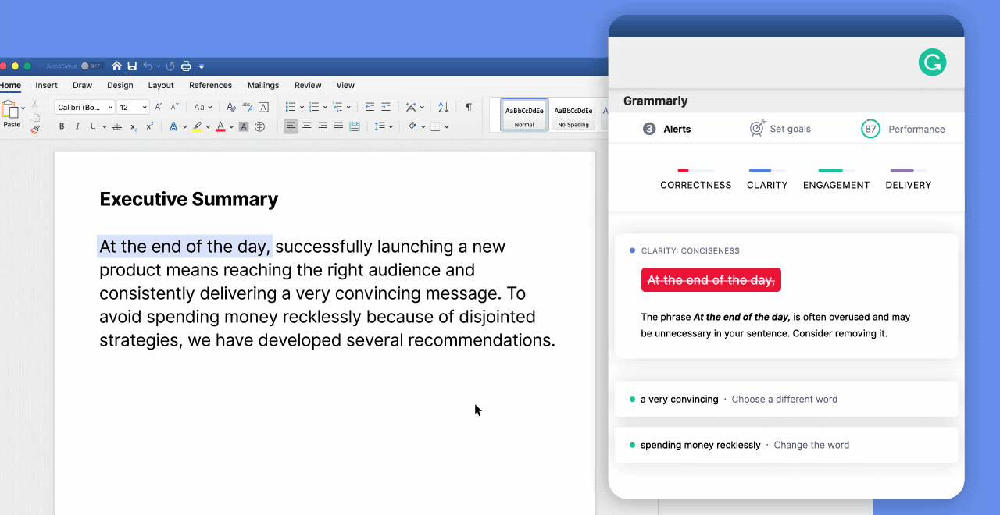
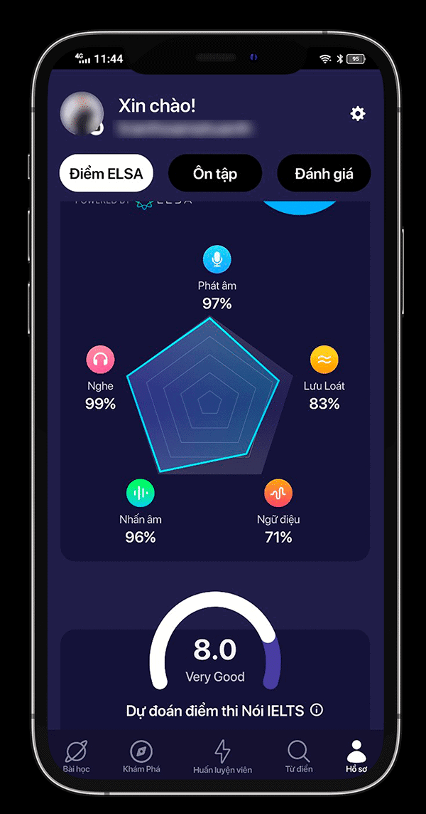

Nhóm 3 - 10CĐTin3
Trong thập kỉ qua, theo nhiều cách khác nhau AI dần trở nên phổ biến ở khắp mọi nơi trong cuộc sống hàng ngày của chúng ta. Từ các cảm biến đến những chiếc xe tự lái AI đã đem lại những thay đổi đáng kinh ngạc. Không chỉ là những ứng dụng trong các lĩnh vực ngân hàng tài chính, y tế, kinh doanh mà AI còn thể hiện vai trò quan trọng của mình trong lĩnh vực giáo dục. Có thể nói giáo dục là lĩnh vực luôn được ưu tiên hàng đầu ở mỗi quốc gia, vậy AI được ứng dụng như nào trong đó? Hôm nay chúng ta sẽ cùng tìm hiểu nhé!
Ở những trường đại học, cao đẳng việc chấm điểm bài tập về nhà hay các bài kiểm tra của các khóa học có thể là công việc thật nhàm chán. Việc chấm điểm lấy đi một khoảng thời gian đáng kể trong khi thời gian đó có thể được sử dụng để trao đổi với học sinh, chuẩn bị trang bị lớp học hay các công việc khác phục vụ thiết yếu cho học tập. Mặc dù AI không bao giờ thực sự có thể thay thế con người trong công tác chấm điểm nhưng ta có thể hi vọng về một sự thay thế khá gần với sự hoàn hảo. Giờ đây việc chấm điểm các bài thi trắc nghiệm, bài thi điền vào chỗ trống không còn là trường hợp hiếm gặp, việc chấm điểm cho các bài viết cũng sẽ không còn xa vời trong thời gian tới.
Tất cả các cấp bậc học tập với một con người, từ mẫu giáo đến sau đại học, trí thông minh nhân tạo đều tác động đến giáo dục thông qua các mức học tập cá nhân hóa cao hơn. Số lượng chương trình học tập, trò chơi và các phần mềm thích ứng ngày càng tăng. Những hệ thống AI đáp ứng nhu cầu của học sinh, tập trung vào các chủ đề, lặp lại những điều học sinh chưa nắm vững, học sinh có thể học tập với tốc độ của riêng mình. Hình thức giáo dục tùy chỉnh là giải pháp hỗ trợ giúp học sinh ở các cấp độ khác nhau có thể học tập cùng nhau trong một lớp học. Học tập thích ứng có tác dụng lớn đến giáo dục toàn quốc.
Giáo viên nhiều khi có thể chưa nhận thấy được khoảng trống trong các bài giảng và tài liệu giáo dục. Trí tuệ nhân tạo giúp ta giải quyết vấn đề đó. Ta có thể ví dụ với những khóa học trực tuyến, khi một lượng lớn sinh viên gửi đáp án sai cho bài tập về nhà, ngay lập tức hệ thống cảnh báo gửi thông điệp đến giáo viên để tùy chỉnh, cung cấp gợi ý cho câu trả lời đúng.
Tương lai ta sẽ không còn thấy những người dậy kèm bởi một số chương trình dạy kèm đã xuất hiện để giúp học sinh học tập tất cả các môn học. Các chương trình này có thể dạy học sinh những điều cơ bản, tạo điều kiện để phát triển tư duy sáng tạo.
AI có thể đảm nhận các nhiệm vụ như chấm điểm, giúp học sinh học tập thậm chí có thể dậy kèm học sinh. Hệ thống AI có thể được lập trình để cung cấp các kiến thức chuyên môn, là nơi để học sinh đặt câu hỏi và tìm kiếm thông tin. Giáo viên sẽ có vai trò của người hỗ trợ khi sinh viên gặp khó khăn, cung cấp sự tương tác giữa người với người.
Chắc hẳn khi nghe đến trí tuệ nhân tạo trong giáo dục nhiều người sẽ nghĩ rằng đó là những thành tựu mang tầm vĩ mô, khổng lồ và con người không dễ tiếp cận. Tuy nhiên những ứng dụng của trí tuệ nhân tạo trong giáo dục luôn được thiết kế để có thể sử dụng một cách dễ dàng, nhất là đối với các em học sinh, sinh viên. Các sản phẩm trí tuệ nhân tạo có thể tùy biến khó hay dễ, đơn giản hay phức tạp tùy thuộc vào khả năng tiếp nhận của các đối tượng hướng đến.
|
 |
Đây chính là tính năng cơ bản nhất của Grammarly mà bạn có thể hoàn toàn sử dụng mà không phải tốn phí. Cụ thể, Grammarly có thể phát hiện ra đến 250 lỗi chính tả thường gặp trong quá trình viết Tiếng Anh.
Ngoài lỗi chính tả thì lỗi ngữ pháp câu cũng chính là một lỗi vô cùng phổ biến nhưng lại ít người phát hiện hơn lỗi chính tả. Chính vì vậy, Grammarly đủ thông minh để có thể tìm ra được các lỗ hổng trong cú pháp câu. Ngoài ra, Grammarly còn cho phép điều chỉnh lại dấu câu khi cần thiết.
Và tất nhiên là sau khi Grammarly đã phát hiện ra các lỗi chính tả và ngữ pháp trên thì sẽ đề xuất những từ ngữ thay thế sao cho phù hợp hơn. Người dùng có thể chọn sử dụng từ ngữ đề xuất đó hoặc bỏ qua nếu không đồng ý.
Người dùng có thể sử dụng Grammarly một cách linh hoạt và cực kỳ tiện lợi vì phần mềm này hỗ trợ đa nền tảng. Bạn có thể cài đặt phần mềm dành cho PC hoặc ứng dụng trên nền tảng Android và iOS. Ngoài ra, Grammarly vẫn có phiên bản dành cho các trình duyệt web thông dụng như Google Chrome, Microsoft Edge và Safari.
Đối với phần mềm soạn thảo văn bản thông dụng Microsoft Word và dịch vụ email miễn phí Outlook, bạn có thể thêm Grammarly vào như một add-in cho 2 phần mềm này. Nhờ đó, người dùng có thể kiểm tra chính tả và ngữ pháp ngay trên 2 phần mềm trên mà không cần phải thông qua thêm ứng dụng thứ ba hoặc thực hiện thêm các thao tác kiểm tra bên ngoài.
Ngoài các phần mềm để sử dụng riêng biệt các tính năng đầy đủ của Grammarly, ứng dụng này còn hỗ trợ thêm các tiện ích tích hợp trên nhiều trình duyệt web như Chrome, Safari,… Thao tác cực kỳ đơn giản và giao diện cũng dễ sử dụng. Nhờ tiện ích Grammarly, người dùng sẽ được hỗ trợ kiểm tra chính tả và ngữ pháp khi gõ văn bản tiếng anh trên trình duyệt.
ELSA (English Language Speech Assistant) là startup về công nghệ giáo dục tại Silicon Valley đầy triển vọng & đang tăng trưởng rất nhanh. Được thành lập vào năm 2015 bởi Văn Đinh Hồng Vũ (CEO), cùng với người bạn Bồ Đào Nha là tiến sĩ Xavier Anguera (giám đốc công nghệ – CTO), ELSA có công nghệ Trí Tuệ Nhân Tạo với khả năng học sâu (deep learning) và nhận diện giọng nói (speech recognition) độc quyền. Ứng dụng ELSA Speak là ứng dụng học nói và giao tiếp tiếng Anh gần như duy nhất có thể sửa lỗi phát âm chính xác từng âm tiết, đồng thời đưa ra nhận xét tức thì và hướng dẫn sửa lại chuẩn xác. Có trụ sở tại San Francisco, ELSA đã gọi vốn thành công 12 triệu đô từ các nhà đầu tư lớn ở Thung lũng Silicon, Đông Nam Á, Nhật Bản và 15 triệu đô từ vòng gọi vốn series B. Ứng dụng hiện có hơn 40 triệu lượt tải ở 101 quốc gia trên thế giới, và có văn phòng tại Bồ Đào Nha, Việt Nam, Ấn Độ, Indonesia và Nhật Bản.
|  |
Bài kiểm tra đầu vàoELSA Speak yêu cầu bạn ghi âm lại giọng của bạn khi đọc 16 câu mẫu ứng dụng cho sẵn. Khả năng thu giọng của ứng dụng rất tốt ngay cả khi không dùng tai nghe. Sau khi ghi âm mỗi câu, bạn có thể nghe lại, sau đó thu lại hoặc gửi bản thu âm đó để tiếp tục sang câu khác. Sau khi hoàn thành tất cả 16 câu, ứng dụng sẽ hiện:
Tất cả các điểm số đều được tính theo tỉ lệ phần trăm và cho biết mức độ phát âm của bạn thế nào so với người bản ngữ. Bằng cách nhấp vào dấu chấm hỏi bên cạnh mỗi kĩ năng, bạn sẽ được cung cấp thêm thông tin về nó cùng với các ví dụ. Bảng báo cáo kết quả của ELSA Speak rất chi tiết. Ứng dụng phân tích rõ ràng từng câu một và cho biết những gì bạn đang làm tốt và những gì bạn cần cải thiện. Bạn cũng có thể xem chi tiết điểm của bạn trong trang hồ sơ. Ở đây, bạn có thể biết thêm về khả năng phát âm, độ trôi chảy, ngữ điệu, trọng âm của từ, và khả năng nghe của bạn. Điểm sẽ được cập nhật ngay khi bạn làm xong các bài tập. |
Thông thường thì bạn phải luyện phát âm với một người bản ngữ hoặc giáo viên tiếng Anh. Trong trường hợp không có họ ở bên, bạn cũng có thể tự mình làm bài tập, ghi âm lại giọng nói của bản thân cũng như sửa những sai sót.
ELSA Speak được lấy cảm hứng từ hai phương pháp trên nhưng cải thiện chúng. Ứng dụng sẽ cung cấp kết quả tức thì, cùng với đó là một mô hình tiêu chuẩn để phân tích giọng của bạn. Vì vậy, bạn không cần phải đoán xem liệu bạn có phát âm chuẩn hay không.
Sau khi bạn hoàn thành bài kiểm tra đầu vào, ELSA Speak sẽ tự động tổ chức lại các bài học nhằm ưu tiên đánh mạnh vào những điểm yếu của bạn.
ELSA Speak lưu tất cả những từ và cụm từ bạn đã từng gặp trong ứng dụng. Ngoài ra, ứng dụng còn tự động phân cấp những từ bạn phát âm chuẩn với những từ bạn cần cải thiện cách phát âm. Bạn cũng có thể tự thêm các từ bạn chưa thể phát âm chuẩn vào đây.
Nếu bạn dùng bản trả phí, bạn có thể dùng từ điển trong ứng dụng để tra cứu bất kì từ, cụm từ hay câu nào cũng như nghe cách phát âm của nó. Ứng dụng dùng IPA để hiển thị cách phát âm và có video về cách từ hay cụm từ đó được nói bởi người bản ngữ.